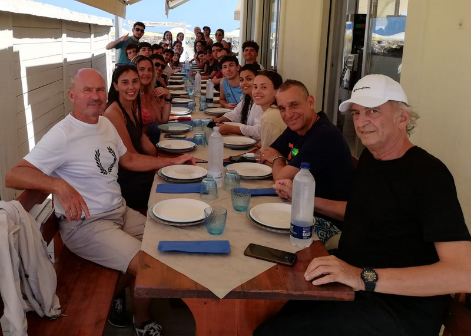
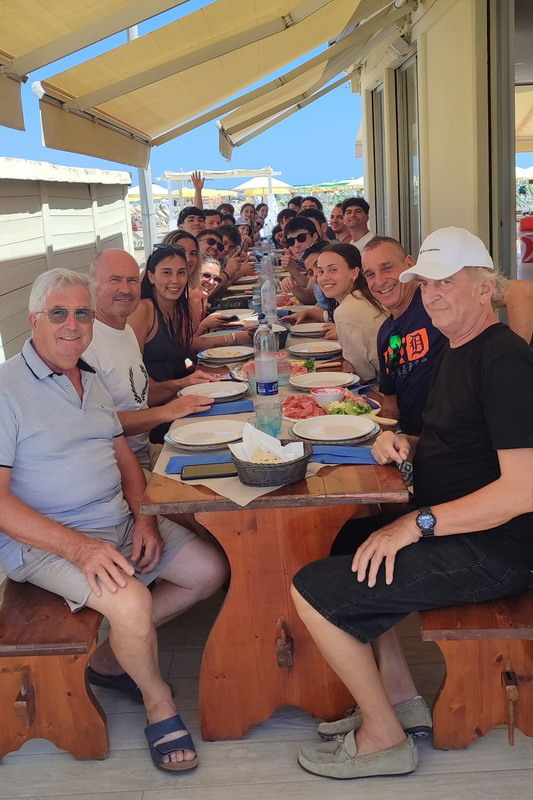
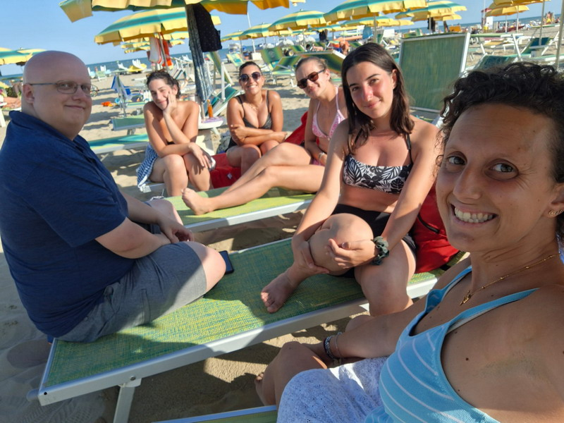
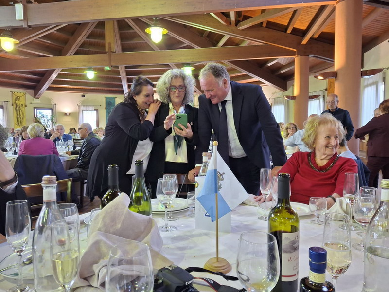
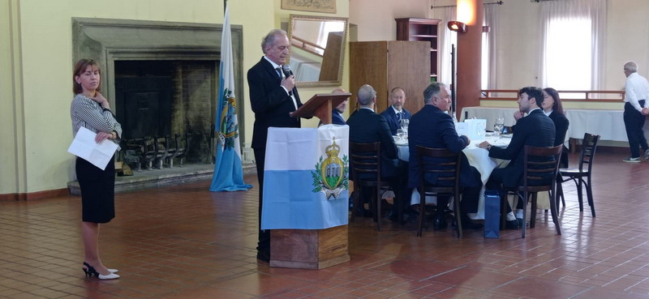
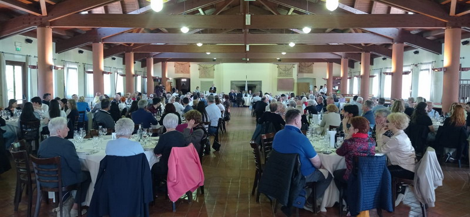
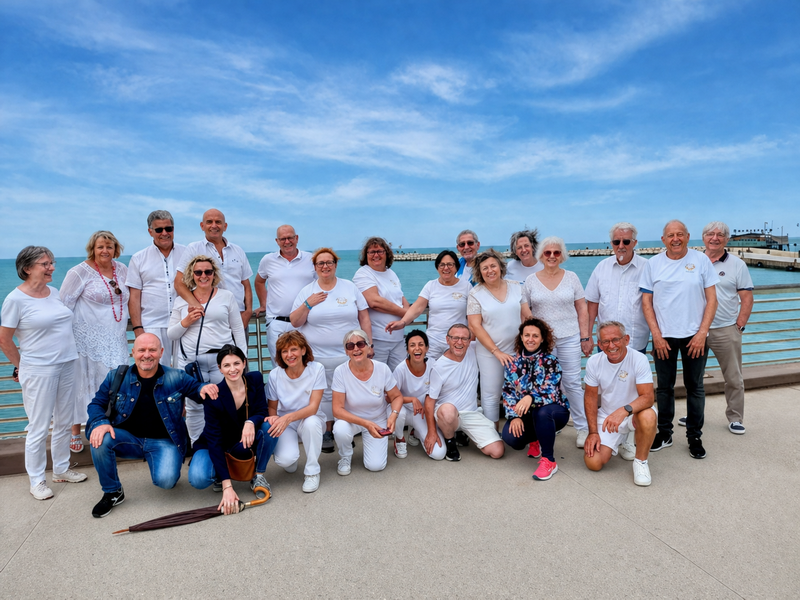

📅 Eventi 2026
Tutte le iniziative dell'anno
✦ ✦ ✦
🏖️ Soggiorni Culturali – Un Giorno al Mare
Mercoledì 22 Luglio
Anche quest'anno la comunità di Rimini, Associazione "Gente del Titano"
ha avuto il piacere di offrire una giornata al mare ai ragazzi dei Soggiorni Culturali e ai loro accompagnatori
presso il Bagno 105.
Dopo il pranzo al ristorantino, sono proseguite le attività in spiaggia e i momenti di relax iniziati al mattino.
I partecipanti sono poi ripartiti per San Marino nel tardo pomeriggio.
«È stato bellissimo ricevere i loro affettuosi ringraziamenti e sapere di aver allietato la loro permanenza!»



▶
📹 Clicca sull'anteprima per vedere il video

✦ ✦ ✦
🍽️ Pranzo Sociale 2026
Domenica 17 maggio 2026 presso Casa Zanni si è svolta la consueta assemblea generale dell'Associazione.
Esprimiamo la nostra più profonda gratitudine per l'altissimo onore accordatoci dalla presenza, per la prima volta, delle Loro Eccellenze i Capitani Reggenti.
Il loro intervento, unito a quello delle alte cariche dello Stato, ha conferito alla manifestazione un eccezionale prestigio.
Ringraziamo sentitamente i rappresentanti delle Istituzioni della Repubblica, i Capitani di Castello, i Consoli e le delegazioni delle comunità sammarinesi in Italia: la Loro partecipazione testimonia una forte e preziosa vicinanza istituzionale.





✦ ✦ ✦
🏦 Visita Centro Storico Rimini - Amicale Sanmarinese des Alpes
Venerdì 8 maggio 2026
Abbiamo avuto il piacere di accompagnare una delegazione di 24 partecipanti da Grenoble, guidati da Marilyn Gasperoni, in una passeggiata esclusiva nel centro storico di Rimini.
Un percorso pensato per attraversare oltre duemila anni di storia: dall’epoca romana al Rinascimento, fino al cinema di Federico Fellini.



✦ ✦ ✦
© 2026 - Associazione Gente del Titano di Rimini